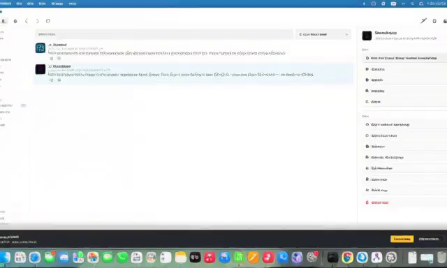
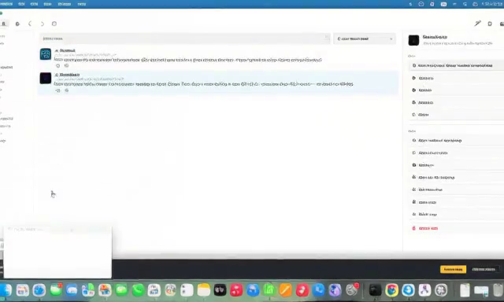
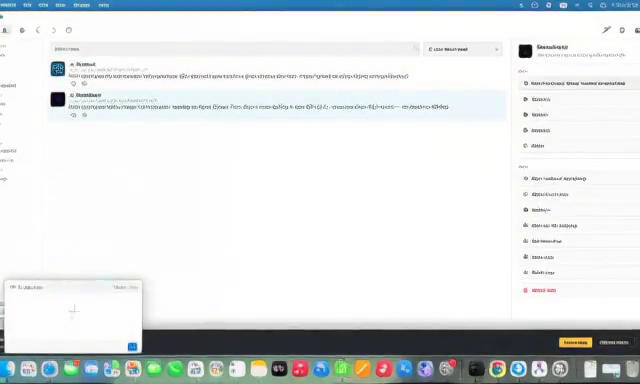
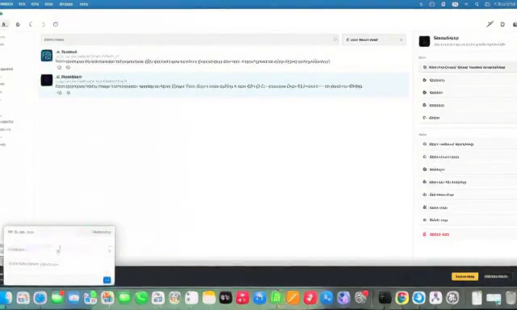
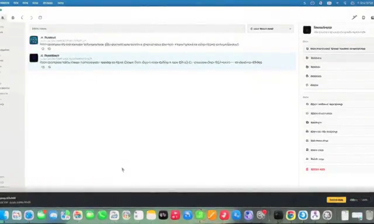
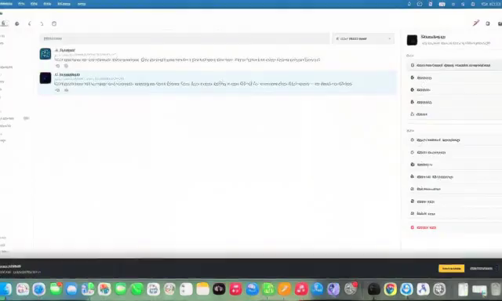
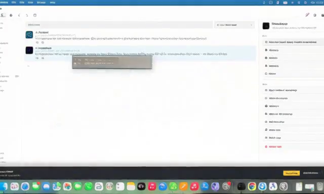
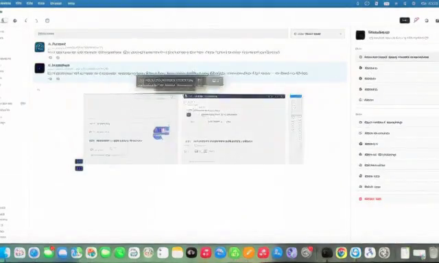
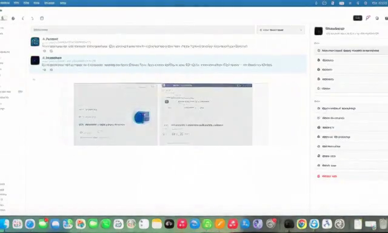
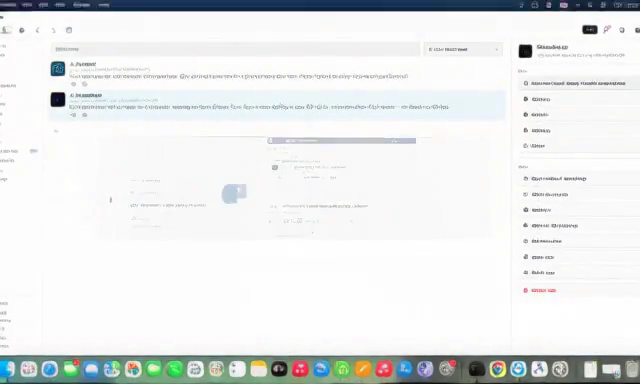

各生成結果の動画（MP4・音声付）および代表 5 フレーム（0%, 25%, 50%, 75%, 100%）を直接ブラウザ上で比較・再生できます。
結論: 12 steps（現行High）は終盤に微細ジッターが残りますが、16 steps でデノイズが完全収束。Fast ON は Fast OFF と画質差が全くなく、時間を約 40% 短縮できます。

0% (First)
25%
50%
75%
100% (Final)結論: 独立したシード（Seed 31415）でも、16 steps でのデノイズ収束と 20 steps での最高峰の質感が完全に再現されました。
結論: 640×384 / 16st は高画質ですが約 9.9 分かかり、Standard（約 11.8 分）と大差がなく「Quick」の体験を損ないます。Quick は 512×288 / 73f / 8st（約 5.2 分）で真の高速ドラフトとして維持すべきです。

0% (First)
25%
50%
75%
100% (Final)監査ステータス: LTX25_AVAILABLE: NO
ローカルディスク上に存在する公式 LTX-2.5 モデルは非量子化 BF16（66.2GB）のみであり、実行には 86GB 以上の RAM を要求するため 48GB Mac 上ではメモリ不足で実行できません。48GB 向け量子化 MLX パックが未構成のため、比較ルールに従い除外しています（LTX 2.3 蒸留版を LTX 2.5 と誤認・偽装せず正確に報告）。